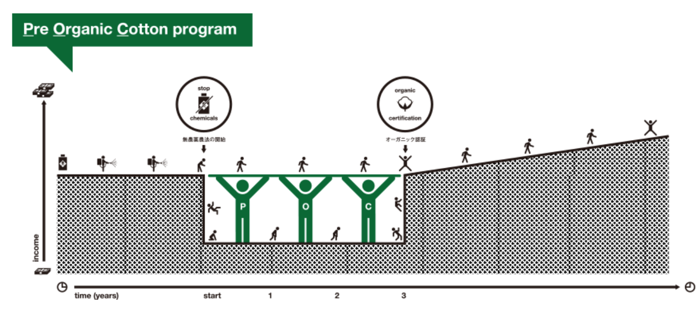

History of POC
As Japan's largest organic cotton consumer
The beginning of Pre-Organic Cotton Program dates back to 2007. Kurkku is working on environmental projects for concert goods such as, ap bank fes, and Mr. Children, and used organic cotton to create T-shirts and towels. In 2007, Kurkku became Japan's largest consumer of organic cotton, consuming about 30% of all organic cotton distributed in Japan. But I didn't know if organic cotton is really good or just a trend. Organic cotton does not use pesticides or other agricultural chemicals, so it is chosen to improve the lives of producers and improve the environment of production areas. Therefore, we went to cotton producing areas, learned about how organic cotton improves cotton producers, and in order to let people know the true feeling of organic cotton, we chose India, which has more small-scale farmers than other countries, and we became a procurement partner for organic cotton. We headed there with ITOCHU Textile Company.
The first realities of producers
When Kurkku and Itochu visited India, they were shown cotton farmers handling pesticides with their bare hands. Pesticides flow into the ground in large quantities, and farmers use the water as drinking water. Some farmers suffered serious health problems and skin diseases. In addition, the financial burden to buy agricultural chemicals and seeds needed for cultivation was large, and some small farmers borrowed money. (2)(3)
When I asked farmers, "Why don't you start organic cultivation?" I learned that the biggest challenge facing farmers is the risk of decreasing cotton production during the two to three years between the start of organic cultivation and certification. At that time, we strongly felt the need to establish a system that allows farmers to grow cotton without the burden of health and economy.
In 2008, the "Pre-Organic Cotton Program" was launched as a program to reduce the burden on farmers involved in the transition to organic cotton and encourage them to become organic.
(2)Ms. Jumde Akanksha,Cash Crop Crisis: Farmer Suicides, Human Rights and the Agrarian Crisis in India,2018,https://www.indianjournals.com/ijor.aspx?target=ijor:rjhss&volume=8&issue=3&article=012
(3)Smita Narula, Faculty Director, CHRGJ/IHRC,EVERY THIRTY MINUTES FARMER SUICIDES, HUMAN RIGHTS, AND THE AGRARIAN CRISIS IN INDIA,https://chrgj.org/wp-content/uploads/2016/09/Farmer-Suicides.pdf
POC created as a mechanism supported by farmers
Looking at the actual situation of farmers, we came up with a mechanism to support farmers during the transition period to obtain organic certification, which is the biggest barrier for farmers. That is the pre-organic cotton program.
Kruk has decided to grow the business together with ITOCHU Textile Company, which has the same ambition. Since the program's inception, 1000 farmers have experienced the transition to organic farming.
< Picture >
It is a briefing session of the pre-organic cotton program where people from the village gathered. Starting organic farming is costly in terms of money and farming methods, so you need a support system as well as individual efforts.
The first is to ensure that you buy organic cotton at the same price as organic cotton in order to eliminate the fear that agricultural chemicals will reduce crop yields and lower income.
< Picture >
The second is to give technical guidance on organic farming. It has been 20 to 30 years since agricultural chemicals were used in this area, so everyone has forgotten the agricultural methods that do not use agricultural chemicals. The photo shows how to make natural insect repellents by mixing herbs grown in the area.I use a grass called neem, but when I try to bite it, it is very bitter and insects seem to escape properly.
< Picture >
It is also important to certify by a third party. Pre-organic cotton is certified by an organization called Control Union or Control Union. [LINK1]For the first time, it has been certified as organic cotton because it has been pesticide-free for 3 years and has not used genetically modified seeds.
Local inspectors check the soil condition regularly to see if it uses pesticides. The photo shows an inspector checking the condition of the soil. If you look at the color and hardness of the soil, you can tell at a glance if they use agricultural chemicals.
< Picture >
And in autumn, when the harvest season comes, the cotton is collected on a cow carriage.
This photo shows a collection of cotton from the first year of organic farming. The harvest season is full of joy and smiles.
In the more than 10 years since its inception, the Pre-Organic Cotton Program has helped to organise many farmers in India.However, even now, the production volume of organic cotton is only about 1% of the total cotton production volume.By choosing a pre-organic cotton T-shirt, you can help the 8 square meter cotton field become organic. Why don't we make the world more sustainable with our own efforts from the cotton we have around us?
It was no easy road.
Until around 2015, the Pre-Organic Cotton Program worked with partners in India to recruit farmers for planned cultivation. However, market movements were difficult to read and sales were difficult, and in 2016, the program stopped its own planned cultivation and shifted to a model of purchasing the necessary amount of cotton from the transition period produced by partners. While the market demand for organic cotton increased, the awareness and understanding of POC, which is different from organic cotton, did not increase.
Future of POC
Consumer awareness of the environment is increasing year by year. Fashion is no exception.The pre-organic cotton program began with our desire to make the world more sustainable with our own efforts, starting with cotton that is close to us, and has been developed for more than 10 years. We will continue to respond to changing market needs while working hand in hand with producers and consumers with unwavering determination.
POC TIMELINE
2008
kurkku and Itochu together launched the Pre Organic Cotton program.In partnership with Raj Ecofarm, we started POC in Khargun district, Madhya Pradesh.
2011
In partnership with textile company Dean, POC expanded to the Dhule district of Maharashtra.
Awarded "Good Design Sustainable Award (Minister's Prize, the Ministry of Economy, Trade and Industry)" a recognition given by the Japanese government to initiatives that contribute to promoting a sustainable society through good business conduct.
2012
Joined the Business Call to Action (BCtA). BCta is a global initiative hosted at the United Nations Development Programme (UNDP), which promotes businesses aimed at achieving both commercial success and sustainable development. ITOCHU and kurkku have pledged the BCtA to scale up the POC program.
2014
Selected as finalist in Nikkei Social Initiative Award 2014. Nikkei Social Initiative Award is run by the largest business newspaper company Nikkei, which awards businesses in Japan that address social challenges and contribute to creating a sustainable society.Total number of brands and retailers engaged in the POC initiative reached 47, and growing.
2015
We continue to deliver to promote cotton-in-transition (Pre Organic Cotton) in the apparel sector and help promote the livelihoods of small scale farmers in India and at the same time support successful organic cotton businesses for retailers and brands.In order to further scale our initiative, we are expanding our business beyond Asia to Europe and the US.
2016〜
Until then,we’ve been working with partners in India to recruit farmers for planned cultivation, but because the market was unpredictable and sales were difficult, in 2016 they stopped its own planned cultivation and shifted to a model in which the necessary quantity of cotton is purchased from the transitional period produced by the partners. While the demand for organic cotton from the market increased, the recognition and understanding of POC, which is distinguished from organic cotton, did not spread, and there were times when it was difficult due to the decrease in the handling quantity.
2020〜
As a program to promote traceability and sustainability, the importance of "transition period cotton" has been reevaluated by TE participating companies, and the POC is drawing more attention.
As a result of the system change, TC (Transaction Certificate) was issued for IC2 (cotton for the second year transition period), and as a result, some brands began to treat cotton for the transition period in the same way as organic cotton.